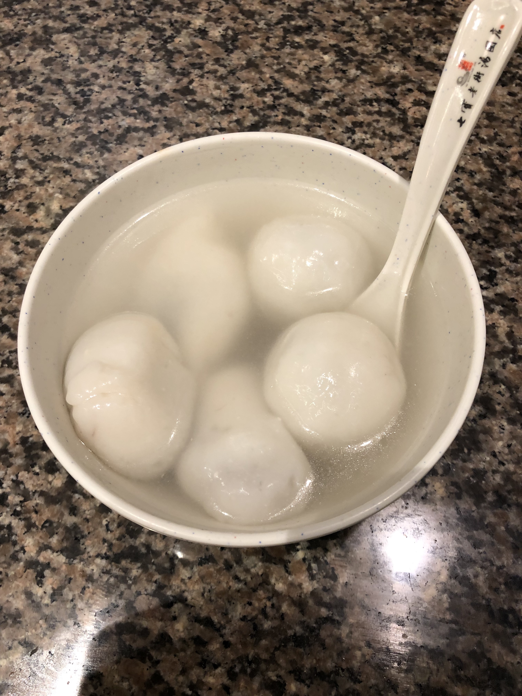
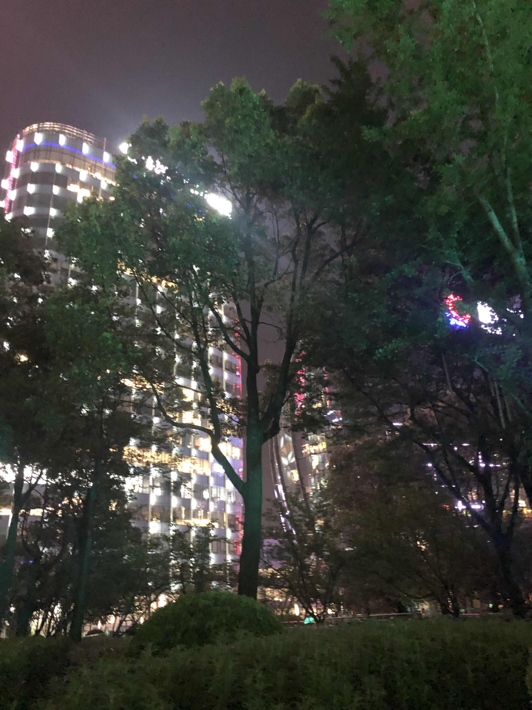
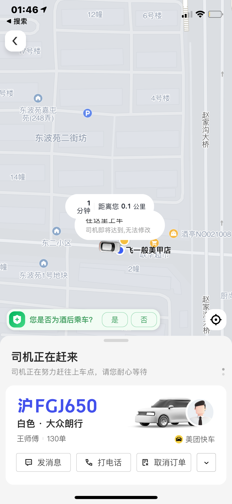

2022-04-08
本文原为情书的后半部分 前半部分
7月30号向你表白之前，我做了很久的心理准备。虽然我的表白看上去很随意，实际上这件事被我拖了很久，直到那一天前我都没有想好到底用怎样的形式和你说。我朋友说你很社恐，所以在微信上表白或许不会让你那么尴尬，不过我更想亲口告诉你。在我们确定关系之前，我会频繁地观察你的朋友圈，我发现你的朋友圈背景很多时候是我们出去玩拍的照片，虽然也许只是巧合，但我心里还抱有一点点期望。我做了最坏的打算：我准备好尴尬地把你送回家、我准备好和你断了联系、我准备好接受失恋的结局。
表白完你支支吾吾说了很多话，我也不懂你在说什么，直到你和我拥抱的时候我才明白你的意思。与其说是拥抱，不如说是我们恋爱的开端？我们沿着北外滩一直走，天空突然下起小雨，把闷热的空气一扫而空。那段时间你愿意陪我到好晚，晚到街上一点声音都没有。我不知道那晚你在想什么，虽然到现在我时常也不知道你在想什么，像是从约会中分神的表情，等我叫你的时候你又会摆出一副可爱的面孔，猜喜欢的女生的心思好难啊！
那晚我很难入睡。“就这样在一起了吗？好像有点魔幻，可是感觉也不是做梦啊！”我不是很确定，直到第二次见面的时候你给了我肯定的答复，我才敢牵起你的手。那段时间我真的很开心，可能梦想成真也不过如此吧。坦白地说，我从来没有在一个女孩子身上花费这么多心思，我对你的喜欢值得这一切，从那时我打算和你在一起很久很久。
我发现，和你交往之后我变得更加喜欢你了，我似乎被你的一切吸引。在那段艰难的日子里，你就是支撑我前进的唯一动力。你在情感上给予了我很多支持，让我变得是那样依赖你，我不知道这是否是一件好事，但是目前来开我还挺乐在其中的。
分别太久，已经忘记拥抱是什么感觉，希望可以早早回想起来
Hit me like a ray of sun, Burning through my darkest night, You're the only one that I want, Think I'm addicated to your light, Standin in the light of your halo, I got my angel now. ——表白完那天我听的歌
逛宠物店。她这身衣服很好看
晚饭，汤圆
表白前两个小时，她聊她写备忘录的事
第二天凌晨1:46，手机没有信号
于是我去一家罗森蹭了店员的热点
评论区